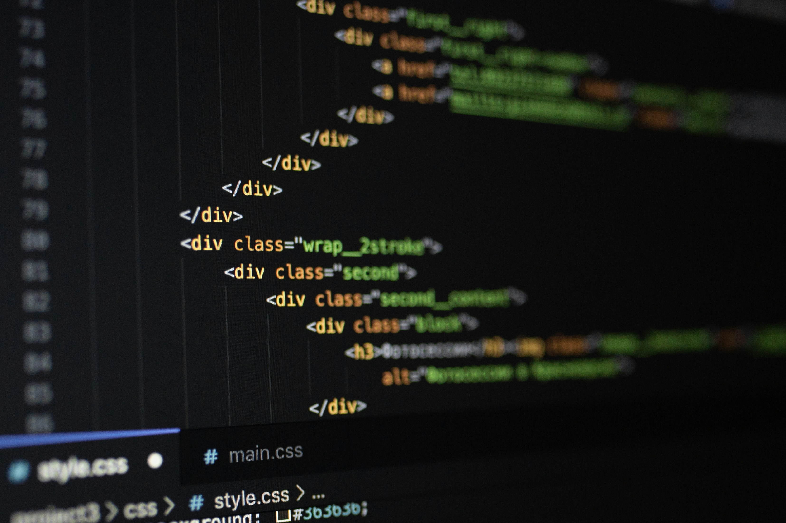
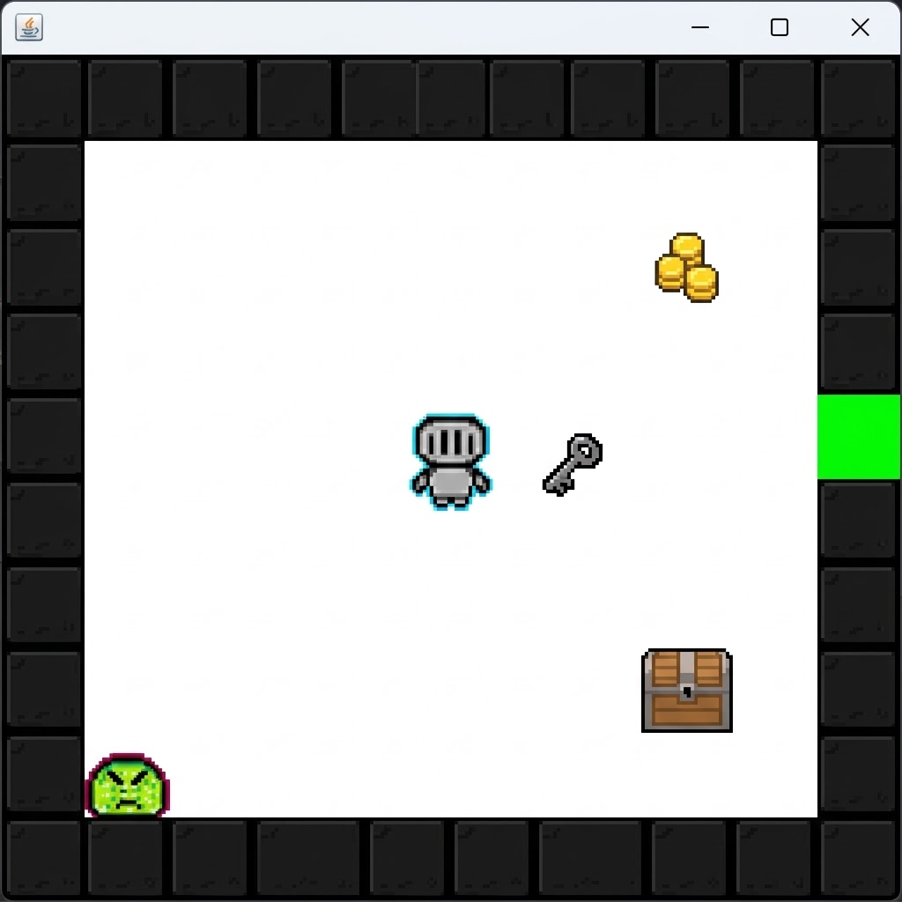
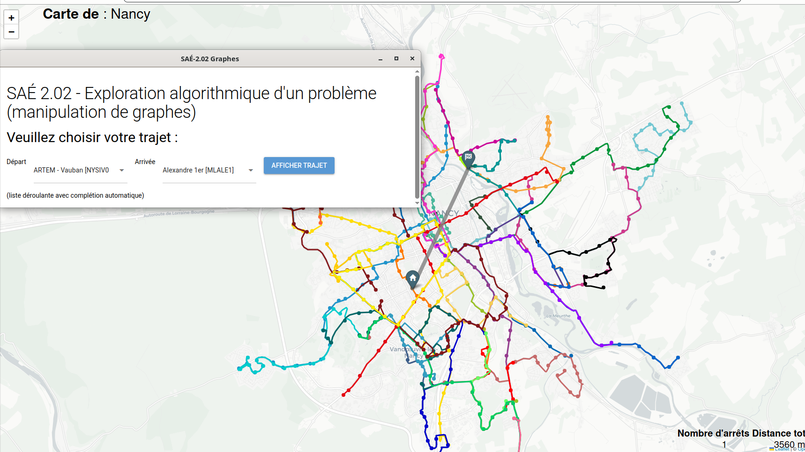

PORTFOLIO PERSONNEL · 2026
FRANCE
Bonjour, moi c’est Lucas.
Étudiant en
informatique.
Curieux par nature.
J’explore le monde du développement, j’apprends en construisant et je transforme mes idées en projets concrets.
↓
LUCAS DA SILVA — 2026
HTML · CSS · JAVASCRIPT
FAIT AVEC CURIOSITÉ
Opportunité
recherchée
Dans le cadre de ma deuxieme année de BUT informatique a l'IUT Nancy-Charlemagne, je recherche un stage d'une durée de 10 semaines du 15 février au 24 avril 2027.
Je recherche des missions liées à la conception et à la réalistion d'applications afin de continuer à progresser dans un cadre professionnel
Me contacter Consulter mon CV01 — PROJETS
Du concret,
Du concret,
pas seulement des idées.


02 — À PROPOS
Apprendre en faisant.
Je suis Lucas Da Silva, étudiant en informatique et passionné par les possibilités qu’offre le numérique.
J’aime comprendre comment les choses fonctionnent, expérimenter de nouvelles idées et progresser projet après projet. Ce portfolio est mon espace pour documenter ce parcours et partager ce que je construis.
Mon objectif : développer des bases solides, écrire du code utile et continuer à apprendre au contact de nouveaux défis.
Une idée ou une opportunité ?01
Esprit analytique
Capacité de compréhension d’un besoin complexe & esprit logique.
02
Travail d'équipe & adaptabilité
esprit d'équipe et capacité d’écoute active.
03
Apprentissage autodidacte
Travail en autonomie et capacité d’auto apprentissage.
03 — COMPÉTENCES
Des bases solides,
Des bases solides,
toujours en évolution.
Mes compétences & technologies que j’utilise ou que je développe actuellement.
01
Java
Programmation Orientée Objet
↗02
Git & GitHub
Versionnement & publication
↗03
HTML5
Structure sémantique & accessibilité
↗04
CSS3
Mise en page & responsive design
↗05
JavaScript
Interactions & logique côté client
↗06
UML
Analyse & Conception Objet
↗07
SQL • PL/SQL
Bases de données
↗08
JetBrains IDE & VS Code
Outils & Environnements de développement
↗
04 — CONTACT
On construit
On construit
quelque chose ensemble ?
Un projet, une question ou une opportunité ? Contactez-moi, je serai ravi d’échanger.
Me contacter par email LinkedIn GitHub